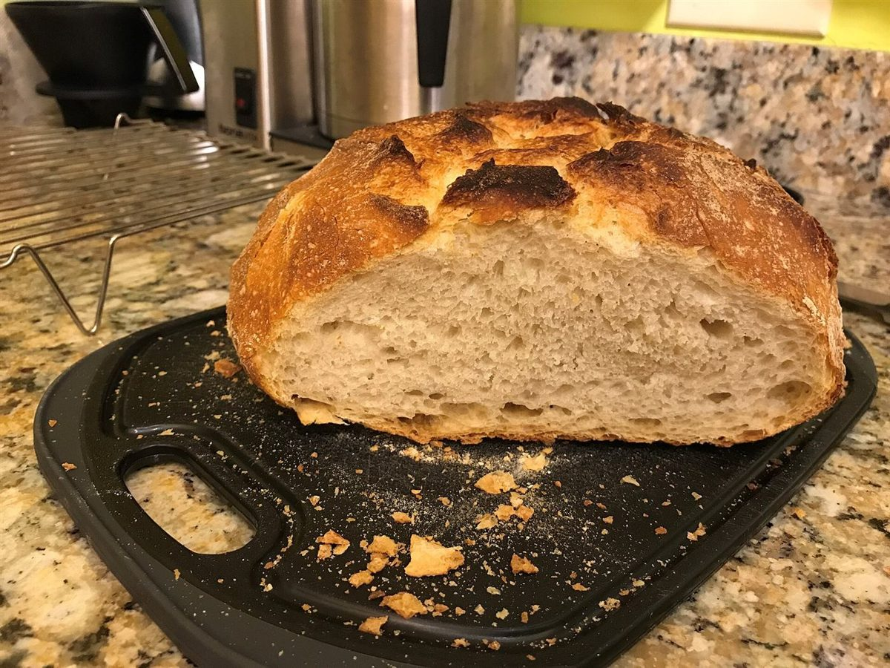

実験レポート 02題目: 材料実験者: ____日付: ____
2. 材料
材料と手順:準備中
メニューと価格は準備中です。確認でき次第、こちらに掲載します。
| メニュー | 準備中 |
|---|---|
| 価格 | 準備中 |
| ご予約 | 準備中 |
下の「試料」の写真は、パン屋という業種のイメージを伝えるためのフリー素材です。お店で提供しているものではなく、提供メニューを示すものでもありません。
- A

試料A 丸いパン - B

試料B 積まれたパン - C

試料C 細長いパン - D

試料D 穂の形のパン - E

試料E 断面 - F

試料F 並べた丸いパン